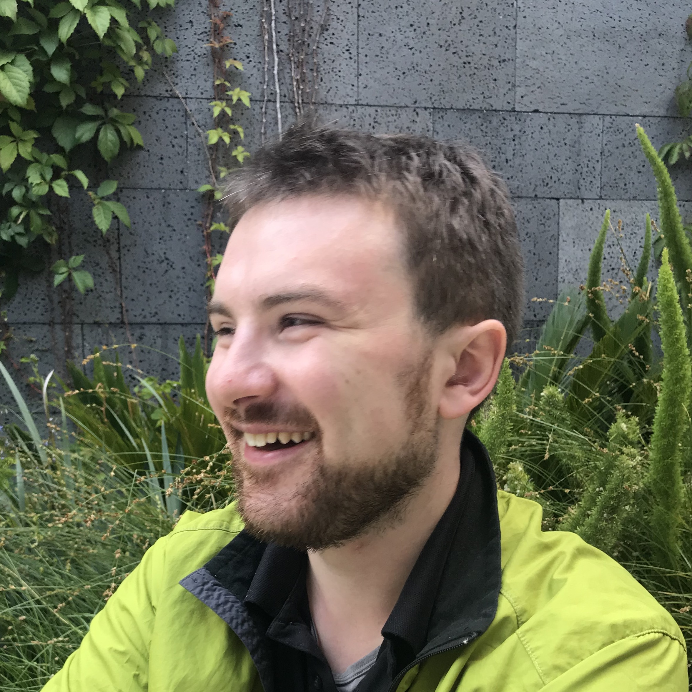

Keynote Speakers


International Conference on Robotics and Automation (ICRA) 2019
Full-Day Workshop
Friday, May 24, 2019
Room 520D
In past years, model-based techniques have successfully endowed aerial robots with impressive capabilities like high-speed navigation through unknown environments. However, task specifications, like goal positions, are often still hand-engineered. To achieve true autonomy in applications such as disaster response and environmental-monitoring, unmanned aerial vehicles (UAVs) must additionally exhibit semantic understanding of tasks and environments, adaptation to unexpected changes, and robustness to unmodeled disturbances.
Machine learning and deep learning have emerged as promising tools for higher-level autonomy, but are more difficult to analyze and implement in real-time. Furthermore, maintaining high thrust-to-weight ratios for agility directly contradicts the need to carry sensor and computation resources, making hardware and software architecture equally crucial decisions.
This workshop aims to bring together researchers in the complementary fields of aerial robotics, learning, and systems to discuss the following themes:
The objectives of this workshop are to:
We will host invited speakers that give a broad view of the state-of-the-art. This will include academic faculty as well as industry speakers on the commercial side and research side of UAV innovation.
| 8:30 | Opening Remarks |
| Session 1: Safety and Robustness in Dynamic Environments | |
| 8:30—9:30 |
Keynote: Prof. Lydia Tapia Motion Planning Under Uncertain Conditions Navigation uncertainty comes from many sources, both internal to the robot, e.g., control or localization uncertainty, or external to the robot, e.g., changes in or uncertainty of the world around the robot. In this talk, we will address multiple forms of uncertainty that impact autonomous navigation. First, we consider navigation in environments that are changing stochastically. Current solutions are able to directly integrate stochastic changes that occur during navigation and provide real-time capable solutions for navigation. Next, we consider transition uncertainty that occurs when an action is taken but the outcome is unexpected. Through adaptation of learned plans, adjustment to certain forms of transition uncertainty can occur. Finally, we consider model uncertainty, a lack of precision or error in the world model used to navigate. Through an exploration of state-of-art approaches in both learning and traditional planning-based, we will address both the real-time feasibly and the best conditions for currently proposed navigation solutions under uncertainty. Bio: Lydia Tapia is an Associate Professor in the Department of Computer Science at the University of New Mexico. She received her Ph.D. in Computer Science from Texas A&M University and her B.S. in Computer Science from Tulane University. Her research contributions are focused on the development of computationally efficient algorithms for the simulation and analysis of high- dimensional motions for robots and molecules. Specifically, she explores problems in computational structural biology, motion under stochastic uncertainty, and reinforcement learning. Based on this work, she has been awarded two patents, one on a novel unmanned aerial vehicle design and another on a method to design allergen treatments. Lydia is the recipient of the 2016 Denice Denton Emerging Leader ABIE Award from the Anita Borg Institute, a 2016 NSF CAREER Award for her work on simulating molecular assembly, and the 2017 Computing Research Association Committee on the Status of Women in Computing Research (CRA-W) Borg Early Career Award. |
| 9:30—9:45 | Paper Presentation: "Safe Learning-Enabled Decision-Making for Autonomous Navigation in Unknown Environments", Somil Bansal. |
| 9:45—10:00 | Paper Presentation: "Socially Aware Motion Planning for a Flying Robot with Model Predictive Path Integral Control", Hyung‑jin Yoon, Pan Zhao, Chuyuan Tao, Christopher Widdowson, Ranxiao Wang, Naira Hovakimyan and Evangelos Theodorou. |
| 10:00—10:30 | Coffee Break |
| Session 2: Learning from Humans and for Humans | |
| 10:30—11:30 |
Keynote: Prof. Davide Scaramuzza Bio: Davide Scaramuzza (born in 1980, Italian) is Professor of Robotics and Perception at both departments of Informatics (University of Zurich) and Neuroinformatics (University of Zurich and ETH Zurich), where he does research at the intersection of robotics, computer vision, and neuroscience. Specifically he investigates the use of standard and neuromorphic cameras to enable autonomous, agile, navigation of micro drones in search-and-rescue scenarios. He did his PhD in robotics and computer vision at ETH Zurich (with Roland Siegwart) and a postdoc at the University of Pennsylvania (with Vijay Kumar and Kostas Daniilidis). From 2009 to 2012, he led the European project sFly, which introduced the PX4 autopilot and pioneered visual-SLAM-based autonomous navigation of micro drones. For his research contributions in vision-based navigation with standard and neuromorphic cameras, he was awarded the IEEE Robotics and Automation Society Early Career Award, the SNSF-ERC Starting Grant, a Google Research Award, KUKA, Qualcomm, and Intel awards, the European Young Research Award, the Misha Mahowald Neuromorphic Engineering Award, and several conference paper awards. He coauthored the book "Introduction to Autonomous Mobile Robots" (published by MIT Press; 10,000 copies sold) and more than 100 papers on robotics and perception published in top-ranked journals (TRO, PAMI, IJCV, IJRR) and conferences (RSS, ICRA, CVPR, ICCV). In 2015, he cofounded a venture, called Zurich-Eye, dedicated to the commercialization of visual-inertial navigation solutions for mobile robots, which later became Facebook-Oculus Switzerland and Oculus' European research hub. He was also the strategic advisor of Dacuda, an ETH spinoff dedicated to inside-out VR solutions, which later became Magic Leap Zurich. Many aspects of his research have been prominently featured in the popular press, such as Discovery Channel, BBC, IEEE Spectrum, MIT Technology Review Magazine. This will be a joint talk with Paper Presentation: "Learning to Race in New Environments", Elia Kaufmann and Davide Scaramuzza. |
| 11:30—12:30 |
Keynote: Dr. Ashish Kapoor Flight Plans vs. Flight Policies: A Pilot’s Perspective Aerial Automation and Autonomy promise to increase efficiency, reduce cost and most importantly take on tasks that are too dangerous or difficult for humans. The current flight missions, often with a human pilot in the loop, are plans based – where the sequence of actions or the path is (mostly) known a priori. Many of the recent advances in autonomy are resulting in systems that are policy based, where the set of actions are stochastic, non-deterministic and often difficult to predict. In this talk, I’ll discuss various advantages and disadvantages of along the continuum between flight plans and flight policies. I’ll also put forward a pilot / controller’s perspective on various case studies which will range from small UAVs to real-world commercial aircraft. Bio: Ashish Kapoor is a Machine Learning researcher, Roboticist, Commercial Pilot and a Certified Flight Instructor. He received his PhD from MIT Media Laboratory and currently leads a group on Aerial Informatics and Robotics at Microsoft. |
| 12:30—13:30 | Lunch |
| Session 3: Software and Hardware Co-Design | |
| 13:30—13:45 | Paper Presentation: "Robust Adaptive Model Predictive Control for High-Accuracy Trajectory Tracking in Changing Conditions", Karime Pereida and Angela Schoellig. |
| 13:45—14:00 | Paper Presentation: "Toward Exploring End-to-End Learning Algorithms for Autonomous Aerial Machines", Srivatsan Krishnan, Behzad Boroujerdian, Aleksandra Faust and Vijay Janapa Reddi. |
| 14:00—14:15 | Paper Presentation: "Understanding the Power Consumption of Executing Deep Neural Networks on a Distributed Robot System", Ramyad Hadidi, Jiashen Cao, Matthew Merck, Arthur Siqueira, Qiusen Huang, Abhijeet Saraha, Chunjun Jia, Bingyao Wang, Dongsuk Lim, Lixing Liu and Hyesoon Kim. |
| 14:15—14:35 |
Keynote: Dr. Anthony Francis Systematizing Robot Navigation with AutoRL: Evolving Better Policies with Better Evaluation Abstract: Rigorous scientific evaluation of robot control methods helps the field progress towards better solutions, but deploying methods on robots requires its own kind of rigor. A systematic approach to deployment can do more than just make robots safer, more reliable, and more debuggable; with appropriate machine learning support, it can also improve robot control algorithms themselves. In this talk, we describe our evolutionary reward learning framework AutoRL and our evaluation framework for navigation tasks, and show how improving evaluation of navigation systems can measurably improve the performance of both our evolutionary learner and the navigation policies that it produces. We hope that this starts a conversation about how robotic deployment and scientific advancement can become better mutually reinforcing partners. Bio: Dr. Anthony G. Francis, Jr. is a Senior Software Engineer at Google Brain Robotics specializing in reinforcement learning for robot navigation. Previously, he worked on emotional long-term memory for robot pets at Georgia Tech's PEPE robot pet project, on models of human memory for information retrieval at Enkia Corporation, and on large-scale metadata search and 3D object visualization at Google. He earned his B.S. (1991), M.S. (1996) and Ph.D. (2000) in Computer Science from Georgia Tech, along with a Certificate in Cognitive Science (1999). He and his colleagues won the ICRA 2018 Best Paper Award for Service Robotics for their paper "PRM-RL: Long-range Robotic Navigation Tasks by Combining Reinforcement Learning and Sampling-based Planning". He's the author of over a dozen peer-reviewed publications and is an inventor on over a half-dozen patents. He's published over a dozen short stories and four novels, including the EPIC eBook Award-winning Frost Moon; his popular writing on robotics includes articles in the books Star Trek Psychology and Westworld Psychology. as well as a Google AI blog article titled Maybe your computer just needs a hug. He lives in San Jose with his wife and cats, but his heart will always belong in Atlanta. You can find out more about his writing at his website. |
| 14:35—15:00 | Interactive Discussion |
| 15:00—15:30 | Coffee Break |
| Session 4: Deep Learning in the Wild | |
| 15:30—16:30 |
Keynote: Dr. Marc Bellemare Deep Reinforcement Learning and the Atari 2600 This talk looks back at how deep reinforcement learning research has developed in recent years, and the role played by the Arcade Learning Environment (ALE) and Atari 2600 video games in establishing deep RL as its own field of research. I will focus on the particular challenges posed by the ALE, and the deep learning approach to solving these problems. I will conclude with insights into more recent applications of deep reinforcement learning: what makes it work, and what are some of the key problems that remain unanswered. Bio: Marc G. Bellemare leads the reinforcement learning efforts at Google Brain in Montreal and holds a Canada CIFAR AI Chair at the Quebec Artificial Intelligence Institute (Mila). He received his Ph.D. from the University of Alberta, where he developed the highly-successful Arcade Learning Environment, the platform that sparked the recent revival in reinforcement learning research. He joined DeepMind in 2013 prior to its acquisition by Google and was research scientist there until his return to Canada in 2017. During his tenure at DeepMind he made major contributions to deep reinforcement learning, in particular pioneering the distributional method. Marc G. Bellemare is also a CIFAR Learning in Machines & Brains Fellow and an adjunct professor at McGill University. |
| 16:30—17:30 |
Keynote: Gareth Cross |
At least one author from each accepted paper should be registered for the ICRA workshops (note this is separate from registration for the main conference). Please prepare for a 15-minute oral presentation (including Q&A) on May 24th. Please upload finals versions of submitted abstracts through via Easychair by May 20th. Please refer to the projector/computer specs on the ICRA webpage.
We are soliciting submissions of 4-page short papers (not including references) with up to a 2-minute accompanying video. Possible topics of interest include, but are not limited to:
We welcome work with experimental validation (including initial preliminary results) or addressing challenges associated with real-world implementation. We also welcome simulation-only papers that convincingly address why the utilized simulator is a compelling representation of real-world conditions and papers with validation on other robotics platforms that could be applied to UAVs. We especially encourage papers that share valuable “failure analyses” or “lessons learned” that would benefit the community. We welcome work at all stages of research, including work-in-progress and recently accepted or published results.
Paper submission deadline: 24-Mar-2019, 11:59PM Anywhere on Earth (AOE) EXTENDED: 7-Apr-2019, 11:59PM Anywhere on Earth (AOE)
Author notification: 25-Apr-2019 3-May-2019
Workshop: 24-May-2019
Submission link: via Easychair
Paper submission instructions: IEEE templates for LaTeX and MS-Word are available from the IEEE PaperPlaza website. Final submissions should be in pdf format.
Video submission instructions: Please include a link to any videos in the text of the submission. Videos can be uploaded to Youtube (as an unlisted video), Dropbox, Google Drive, or a personal webpage. Please make sure to verify video permission settings.
Any additional questions can be directed to: lsaf19@easychair.org
Dr. Aleksandra Faust: Staff Research Scientist, Google Brain, faust@google.com
Prof. Vijay Janapa Reddi: Associate Professor, Harvard University, vjreddi@seas.harvard.edu
Prof. Angela Schoellig: Assistant Professor, University of Toronto, schoellig@utias.utoronto.ca
Dr. Sarah Tang: Robotics Software Engineer, Nuro, Inc./University of Pennsylvania, sytang@alumni.seas.upenn.edu